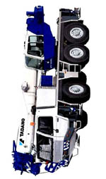

| JUU |
JEWS have to bear the heavy responsibility of being God's People and a Light Unto Nations. |
|
重 looks like : car (車)sandwiched between an extra set of lines on top and bottom So we can say,"The car was so heavy it needed an extra set of tires to carry the load! "

Behold! |
| おも*い |
heavy
★★★★★ |
| ( を ) かさ＊ねる |
to overlap (literally) to have problems or work piling up and your life is hellish (figurative)
★★☆☆☆ |
| ( が ) かさ＊なる |
to get piled up, to get a backlog - to go further and further (into debt)
★☆☆☆☆ |
| 重要 な |
essential
★★★★☆
|
| 体重 |
your mama's weight (450kilos?)
★★☆☆☆
|
| 重点 |
the important point.
★☆☆☆☆
|
| 二重 XXX |
double-xxx
★☆☆☆☆
PRE
PREFIX meaning double, as in "double-chin" or "twin-engine plane." |
| Meaning | Hint | Radical | |
|---|---|---|---|
| 車 | car | ||
| 重 | heavy / overlap | EXTRA LINES / AXLES | |
| 垂 | drip, dangle | LINES DRIP OFF TO THE LEFT AND RIGHT | |
| 乗 | ride a vehicle | TREE | 木 |
Car is an axle turned sideways.
Heavy cars are so heavy they need an extra axle.
Paint drips or dangles from the side of the newly-painted car.
You ride a vehicle RIGHT INTO A TREE.
|
discreet, prudent
弁える 慎重 思慮深い 用心 |
|
gravity
引力 重力 |
|
important, vital
必要 大切 重大 重要 大事 |
|
pile up, cram in
積む 積み上げる 重ねる 詰める |
|
precise, strict,
几帳面な 厳密 厳格 正確 正確 精巧 厳重 きちんと 明確に |
|
set aside, store
蓄える 蓄積 貯める 留まってきた 滞る 重なる 積み重ねる |
|
systematic, methodical
系統 体系てきに 慎重に考える 思料深い 数量化 |
|
the point is...
重点 要点 焦点 |
|
weight
体重 重量 |
 KANJIDAMAGE
KANJIDAMAGE